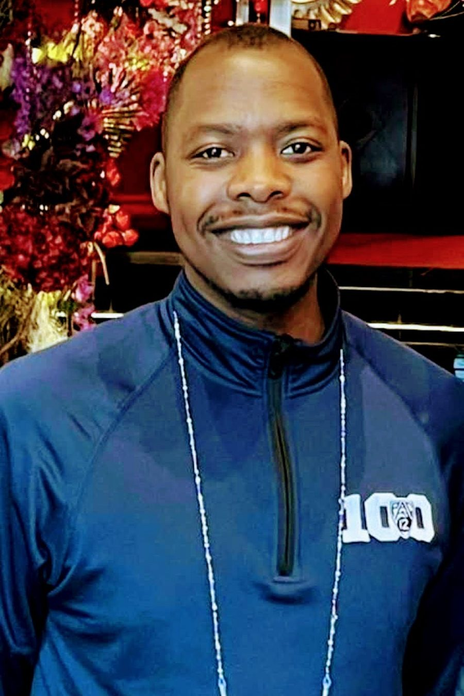
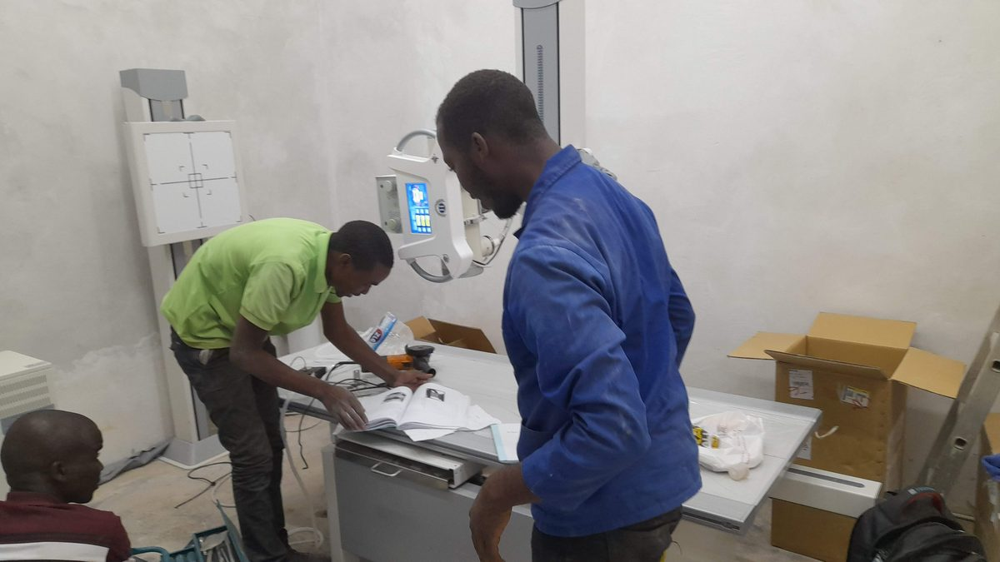
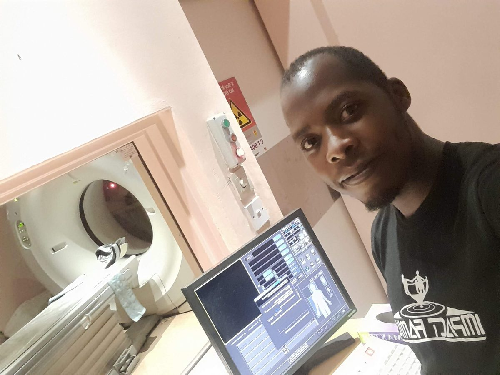
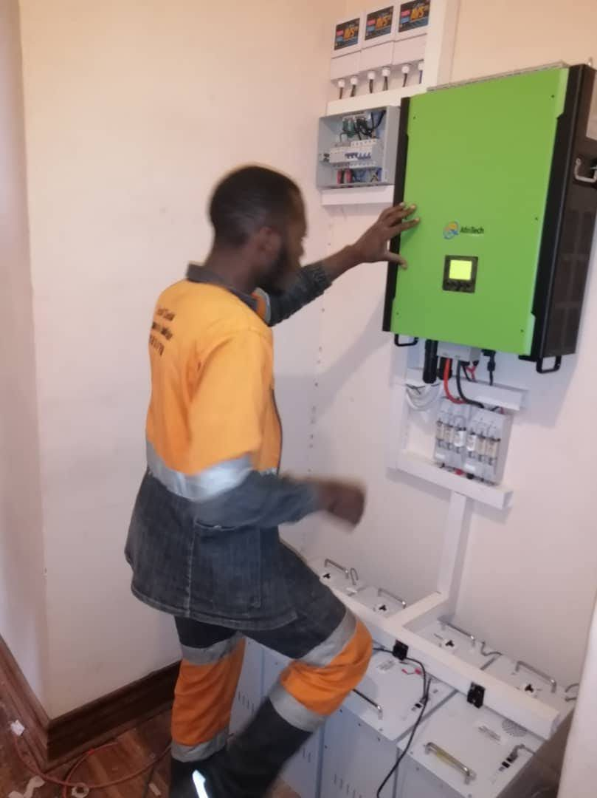
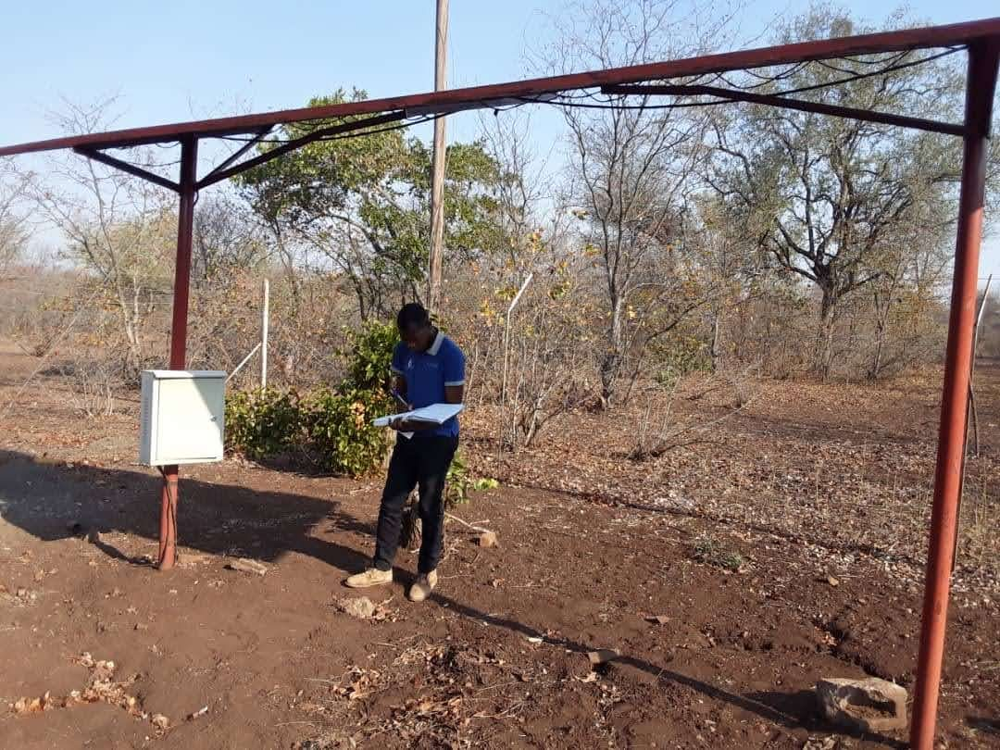
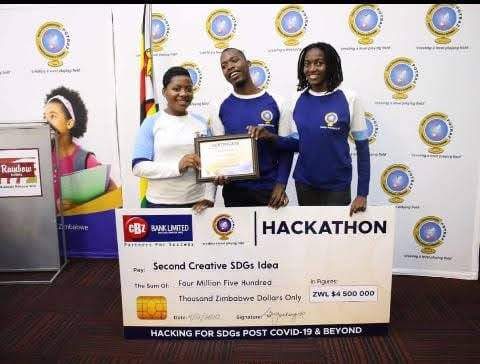
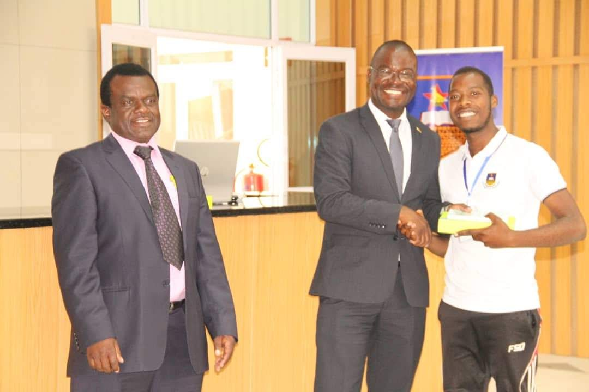

Surgical telementoring
A WebRTC platform that streams the laparoscope and an external theatre camera to a remote mentor, with telestration drawn straight onto the surgical view and two-way audio.
PhD candidate · Biomedical Engineering · University of Cape Town · Google PhD Fellow
Biomedical & electrical engineer working on surgical telementoring and robot-assisted laparoscopic surgery.
I build the hardware and software that let an expert surgeon guide a laparoscopic procedure from anywhere: real-time video links, on-screen telestration, latency measurement rigs and AI that flags bleeding before it starts. I work alongside surgeons at Groote Schuur Hospital, with hands-on experience of the da Vinci surgical robot, LapSim simulators and laparoscopic box trainers.

About
I'm a biomedical and electrical engineer from Zimbabwe, now a PhD candidate in Biomedical Engineering at the University of Cape Town and a Google PhD Fellow.
My research is on surgical telementoring: letting an experienced surgeon supervise and guide laparoscopic procedures remotely, with video, audio and on-screen annotation that arrive fast enough to be useful in theatre. The same questions carry over to robot-assisted laparoscopic surgery, where latency and decision support decide what a remote surgeon can safely do. I work alongside surgeons at Groote Schuur Hospital, and I have had hands-on experience with the da Vinci surgical robot, the LapSim virtual-reality simulator and laparoscopic box trainers.
I am a member of the Telemedicine and Connected Care research group and the UCT MedTech research group in the Division of Biomedical Engineering. The work has taken me to Rwanda, Italy and Finland for research visits and conferences, and it is aimed at the shortage of specialist surgeons in remote and under-served regions, in line with UN Sustainable Development Goal 3.
Before the PhD I spent several years hands-on with medical equipment: planning, installing, calibrating and servicing X-ray machines, dialysis units, autoclaves and chemistry analysers in hospitals across Zimbabwe. I also designed and installed solar power systems, which taught me to build things that keep working far from the nearest workshop.
Research
A WebRTC platform that streams the laparoscope and an external theatre camera to a remote mentor, with telestration drawn straight onto the surgical view and two-way audio.
How network delay and AI decision support shape what a surgeon can do through a robot such as the da Vinci, and how to measure and evaluate it before it reaches a patient.
A glass-to-glass latency rig built around an ATmega328 microcontroller and light sensors, so delay is measured from the endoscope's view to the mentor's screen rather than estimated from network statistics.
Bleeding monitoring and anticipation models for laparoscopic video, evaluated for the latency budget of a real-time telementoring link rather than offline accuracy alone.
Projects
Research software from the PhD, followed by engineering work from industry and earlier degrees.
Real-time telementoring web app with dual-camera streaming (laparoscope plus external view), interactive telestration with pen, shapes, arrows and undo/redo, two-way audio and session monitoring. Being extended with an AI voice assistant and bleeding-anticipation computer vision.
Desktop tool plus microcontroller firmware that measures the glass-to-glass latency of an endoscope video chain and of a telementoring link. An LED in the endoscope's field of view is flashed and light sensors on each screen time its arrival, so link delay needs no clock synchronisation between computers. Guides sensor placement, records trials, analyses them and exports a report.
Predicts that bleeding is about to start several seconds before it does, from laparoscopic cholecystectomy video. Compares a video-frame pipeline (ResNet18 + GRU) with a symbolic event-log pipeline adapted from a published Transformer architecture, under one strict definition of anticipation.
Operating-room-friendly desktop app that captures the laparoscope and an external camera, blurs faces in real time for patient and staff privacy, and serves as the base for WebRTC streaming and telestration overlays.
Windows application that records surgical video from a USB capture device, including da Vinci console output, with an optional webcam picture-in-picture, through a single hardware-accelerated FFmpeg pipeline that writes crash-safe fragmented MP4.
Semi-automatic, isolating and portable health station for swab collection and patient data entry, built for COVID-era screening in Zimbabwe. Non-contact temperature, height and weight measurement, an Android app for data entry, and solar backup power. The thesis earned a distinction.
Read the paper (PDF)Planned, installed, calibrated and serviced X-ray machines, dialysis machines, autoclaves, theatre beds and chemistry analysers for hospitals across Zimbabwe. At Parirenyatwa Group of Hospitals I took part in a water-treatment plant installation and the commissioning of a new MRI scanner.
Designed, installed and maintained off-grid and hybrid solar systems since 2018, from load sizing and panel layout to inverter and battery commissioning, including backup power for medical equipment.
Design, development and implementation of a microcontroller-based smart egg incubator, which won the best innovative project award at the University of Zimbabwe Research Week in 2019. Submitted alongside an LME49710-based audio amplifier as final-year projects.
AI-based automated bleeding monitoring in conventional and robot-assisted laparoscopic surgery: a systematic review
Latency-aware evaluation of bleeding monitoring algorithms for real-time surgical applications
Design of a solar-based virtual clinic for austere environments
User-centred design of a tele-mentoring system for laparoscopic surgery in austere environments
Development of a semi-automatic, isolating and portable health-station for swab collection and patient data entry
Recognition
HUB Biomedical Engineering Fusion event, University of Cape Town.
Awarded for research combining AI and augmented reality in telementoring systems for laparoscopic surgery in resource-limited settings. Includes mentorship from a Google researcher.
University of Zimbabwe Research Week, for the smart egg incubator final-year project.
CBZ Bank "Hacking for SDGs post COVID-19 and beyond" hackathon, Zimbabwe.
Division of Biomedical Engineering, University of Cape Town. PhD research supervised by Dr Bessie Malila, Dr Lamees Ras and Prof Ahmed Biyabani (Carnegie Mellon University Africa).
Medical technology research across the Division of Biomedical Engineering.
Work alongside surgical teams on laparoscopic and robot-assisted surgery, with hands-on experience of the da Vinci surgical robot, the LapSim virtual-reality simulator and laparoscopic box trainers.
Rwanda, Italy and Finland.
Experience & education
Division of Biomedical Engineering, University of Cape Town
Surgical telementoring and robot-assisted laparoscopic surgery: WebRTC streaming, telestration, glass-to-glass latency measurement and AI-based bleeding monitoring, in collaboration with Groote Schuur Hospital.
Med-Elect Technologies, Zimbabwe
Planned, installed, calibrated and serviced biomedical equipment including X-ray machines, dialysis machines and autoclaves, and scheduled preventive maintenance. Delivered solar installations in parallel as a freelance engineer.
Parirenyatwa Group of Hospitals, Harare
Six-month attachment at Zimbabwe's largest hospital: equipment inventory, installation and maintenance across surgery, paediatrics, oncology, haematology, orthopaedics and radiography, including a water-treatment plant and a new MRI installation.
SolidarMed, Zimbabwe
Electronic health project: IoT health devices such as a smart pill bottle, telemedicine tooling (REDCap), monitoring and evaluation, and report writing. Supervised three computer science students and one electronic engineering student.
University of Cape Town
Telemedicine and smart hospitals: telementoring and telesurgery with augmented reality and haptics over 5G networks.
University of Zimbabwe · Distinction
Biomedical devices and biomedical imaging. Thesis: design and development of a smart health station for swab collection and patient data entry.
University of Zimbabwe · Upper second class
Electrical power engineering. Final-year projects: a smart egg incubator and an LME49710-based audio amplifier.
Skills
From the field






Contact
I'm open to research collaborations, talks, and engineering work on medical devices, surgical technology and telemedicine.